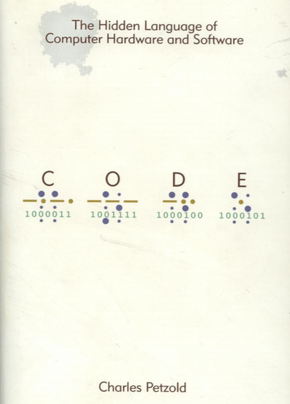

Books that an IT professional should read

Automate the boring stuff with python
If you’ve ever spent hours renaming files or updating hundreds of spreadsheet cells, you know how tedious tasks like these can be. But what if you could have your computer do them for you? In Automate the Boring Stuff with Python, you’ll learn how to use Python to write programs that do in minutes what would take you hours to do by hand—no prior programming experience required.

The C programming language
The authors present the complete guide to ANSI standard C language programming. Written by the developers of C, this new version helps readers keep up with the finalized ANSI standard for C while showing how to take advantage of C's rich set of operators, economy of expression, improved control flow, and data structures. The 2/E has been completely rewritten with additional examples and problem sets to clarify the implementation of difficult language constructs.

Clean Code: A Handbook of Agile Software Craftsmanship
Even bad code can function. But if code isn’t clean, it can bring a development organization to its knees. Every year, countless hours and significant resources are lost because of poorly written code. But it doesn’t have to be that way. Noted software expert Robert C. Martin presents a revolutionary paradigm with Clean Code: A Handbook of Agile Software Craftsmanship. Martin has teamed up with his colleagues from Object Mentor to distil their best agile practice of cleaning code “on the fly” into a book that will instill within you the values of a software craftsman and make you a better programmer–but only if you work at it.

Code : the hidden language of computer hardware and software
What do flashlights, the British invasion, black cats, and seesaws have to do with computers? In CODE, they show us the ingenious ways we manipulate language and invent new means of communicating with each other. And through CODE, we see how this ingenuity and our very human compulsion to communicate have driven the technological innovations of the past two centuries. Using everyday objects and familiar language systems such as Braille and Morse code, author Charles Petzold weaves an illuminating narrative for anyone who’s ever wondered about the secret inner life of computers and other smart machines.

Introduction to compilers and language design
A compiler translates a program written in a high level language into a program written in a lower level language. This book offers a one semester introduction into compiler construction, enabling the reader to build a simple compiler that accepts a C-like language and translates it into working X86 or ARM assembly language. It is most suitable for undergraduate students who have some experience programming in C, and have taken courses in data structures and computer architecture

Computer science distilled : learn the art of solving computational problems
A walkthrough of computer science concepts you must know. Designed for readers who don't care for academic formalities, it's a fast and easy computer science guide. It teaches the foundations you need to program computers effectively. After a simple introduction to discrete math, it presents common algorithms and data structures. It also outlines the principles that make computers and programming languages work.

Eloquent JavaScript : a modern introduction to programming
This third edition of Eloquent JavaScript dives deep into the JavaScript language to show you how to write beautiful, effective code. It has been updated to reflect the current state of Java¬Script and web browsers and includes brand-new material on features like class notation, arrow functions, iterators, async functions, template strings, and block scope. A host of new exercises have also been added to test your skills and keep you on track.

C++ primer plus
C++ Primer Plus is a carefully crafted, complete tutorial on one of the most significant and widely used programming languages today. An accessible and easy-to-use self-study guide, this book is appropriate for both serious students of programming as well as developers already proficient in other languages.
The art of readable code
As programmers, we’ve all seen source code that’s so ugly and buggy it makes our brain ache. Over the past five years, authors Dustin Boswell and Trevor Foucher have analyzed hundreds of examples of "bad code" (much of it their own) to determine why they’re bad and how they could be improved. Their conclusion? You need to write code that minimizes the time it would take someone else to understand it—even if that someone else is you.